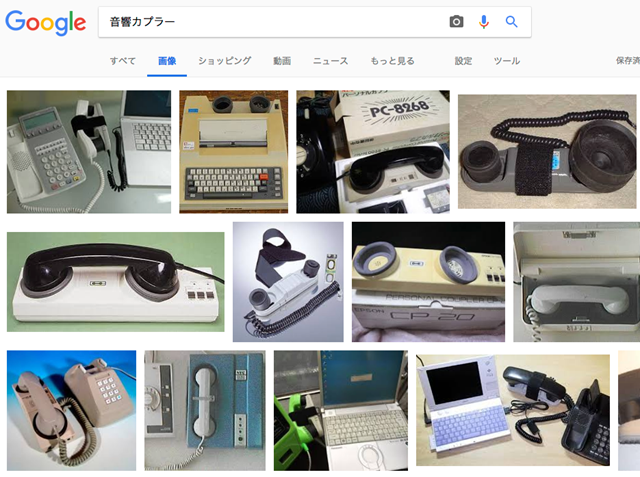

先日、YEPO737A を売ってしまおうとブログに記載したところ早速お声がかかりました。
Windows10home 日本語版をクリーンインストールしましたので、その方法を備忘録がてら書いておくことにします。他の中華PCでも似たような手順で出来ると思います。
■事前準備と全体の流れ
・必要なファイルはバックアップ
・ライセンス認証後、プロダクトIDは一応メモしておく
・Win10 の ISO をダウンロード
・現状のドライバーをDouble Driverでバックアップ
・8GB程度のUSBを用意（MicroSD とかでもOK）
・ISO を ブータブルUSBにするため、Rufus を用意
・回復ドライブを後方に作成するため、パーティション構成をバッチで作成
・USBブートさせるため、BIOS起動
・初回のUSBブート後は、パーティション作成のため、「コンピューターを修復する」を選択
・コマンドプロンプトからバッチ起動しパーティション作成
・2回目のUSBブートで作成したパーティションにインストール
■必要なファイルをバックアップ
eMMC の 64GB の起動ディスクは全部フォーマットしてクリーンインストールしますので全部消えます。必要なファイルはバックアップしておくようにします。
一応、ライセンス認証を通しておきプロダクトIDはメモしておきます。以下の画面をコピーしておきます。

■Windows10 の ISO を MicroSoft からダウンロード
別PCから、マイクロソフト社のサイトに行って Windows10 の ISO をダウンロードしておきます。
■現在のドライバーを一括バックアップ
Double Driver というツールで、ドライバーをバックアップ。バックアップし忘れちゃった人は、以下からダウンロード
737A_DRIVERS
https://drive.google.com/open?id=1KxRG4fW0CjjfUhKG1TssjKiiv8jmn5je
※フランスのHodinさんが公開しています。リスクは自己責任で。
ちなみに、YEPO737A の BIOS は Jumper EZBOOK Pro ので動作したとここに報告がありました。上記のリンクにもBIOS入っていますがまだ試していません。これは、BIOS 設定の OS を Intel Linux にすると BIOS すら起動しなくなるらしいですが、これも回避できるかは不明です。もしかすると、M2 関連の不具合も直る可能性があるかもしれませんね。一度試してみたいのですが、リスクがありますのでまだ実行していません。YEPO のオフィシャルサイトは以下ですが、サポートがありません。
YEPO 737A
http://www.szyepo.com/pd.jsp?id=351※ Review 欄に、bios やドライバー公開せよと書かれていますが対応するのかな？
■Windows10 の ISO を USBブートさせる
マイクロソフトのサイトからダウンロードした ISO を USB ブートさせるため、Rufus を使って作成します。
マイクロソフトが提供している標準のツール（MediaCreationTool.exe）でも可能ですが処理が遅いのとダウンロード済みのISOから作成する方法が不明だったので、Rufus を使いました。以下のような感じです。８GBくらいのUSBに作成しました。４GBのUSBがあればいけそうです。

■回復ドライブを後方に作成するバッチ
以上で、USBドライブから起動させインストールが可能なんですが、パーティションを全部消して、新規インストールすると回復パーティションが先頭に来てしまいます。これでも動きますが、あとで消したいときに後方にあったほうが空きが増やせますので、パーティションをバッチで作成します。
以下のサイトに習って、パーティション作成バッチをUSBの中に入れておきます。
Solomonレビュー
Windows 10をクリーンインストールする前にひと工夫、回復パーティションの増殖を防ぐ方法(更新)
https://solomon-review.net/windows10-prepare-partition-before-clean-install/
上のリンクで、バッチファイルとその内容が書かれたファイル「CreatePartitions-UEFI.txt」、「Make-Partition.bat」をUSBメモリーの直下にコピーしておきます。
■USBブートさせるためBIOS起動
さて、やっとUSBを YEPO737A に挿して起動します。BIOS画面はDELキーを押すと入れます。BIOSに入ったら、一番右のメニュー「Save & Exit 」まで進み、以下のような Boot Override 項目の下に出ているUSBドライブを選択します。

選択すると、USBから起動します。
一旦、「UEFI: Built-in EFI Shell 」に入り、そこから、USB起動の操作をしても構いません。その場合、EFI Shell から次のようにコマンドをタイプして起動できます。
Shell> fs3:
fs3:> efi\boot\bootx64.efi
ちなみに、microSDカードをSDカードスロットに入れてみたら efi shell からデバイスが認識できませんでした。何か方法はあるとは思うのですが、とりあえずは、USB を USB3.0 に挿して認識するはずです。
初回のブート時は、パーティションをバッチで作るため、以下のようにします。

コンピューターを修復する を選択
トラブルシューティングを選択
コマンドプロンプトを選択
d: 直下が USB のようでした。Make-Partition.bat をタイプして実行します。
exit で抜けてリブートし、2回目のUSBブートでは通常通りWindowsのインストールへ進みます。
上記のようにパーティションを選択して次へ進みインストールします。（その後は割愛）
インストール時に、パーティションをマニュアル設定できるインターフェイスがないのと、パーティションが１つも無い場合に自動的に作成するパーティション構成を、回復パーティションが後方になるよう作ってくれればいいのになと、MicroSoft に？を投げたいです。まぁ、いろいろと事情があるのでしょう。そうそう行う作業ではないのですが、普通は戸惑いますよね。これ。